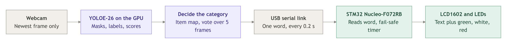

BinGo
Nov 2026AI waste-sorting station · TidalByte Hackathon
A waste-sorting station that tells you which bin an item goes in as you're throwing it away. An open-vocabulary YOLOE model recognizes the item from a webcam and votes over 5 frames, then the laptop sends one word over UART to an STM32 Nucleo, which shows the bin on an LCD with a green, white, or red LED. If the laptop goes quiet for 1.5 s, the board shows "Laptop offline" instead of a stale answer.




Python · YOLOE · OpenCV · STM32 · C++ · UART
View on GitHub →